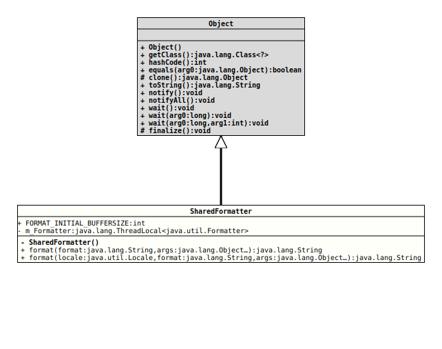

Module org.tquadrat.foundation.base
Class SharedFormatter
java.lang.Object
org.tquadrat.foundation.lang.internal.SharedFormatter
@ClassVersion(sourceVersion="$Id: SharedFormatter.java 820 2020-12-29 20:34:22Z tquadrat $")
@API(status=INTERNAL,
since="0.1.0")
@UtilityClass
public final class SharedFormatter
extends Object
This class provides an implementation of
String.format()
that uses a shared instance of
Formatter.- Author:
- Thomas Thrien (thomas.thrien@tquadrat.org)
- Version:
- $Id: SharedFormatter.java 820 2020-12-29 20:34:22Z tquadrat $
- Since:
- 0.1.0
- UML Diagram
-

UML Diagram for "org.tquadrat.foundation.lang.internal.SharedFormatter"
{kind=link}
-
Field Summary
FieldsModifier and TypeFieldDescriptionstatic final intThe initial buffer size that is used byformat(String, Object...)andformat(Locale, String, Object...)(per thread): 2048.private static final ThreadLocal<Formatter>The cachedFormatterinstance. -
Constructor Summary
Constructors -
Method Summary
Modifier and TypeMethodDescriptionstatic final StringReturns a formatted String using the specified format String and arguments.
The implementation uses internally theLocalethat is returned byLocale.getDefault().
This method is meant as a replacement for the methodString.format(String, Object...); that implementation always uses a new instance ofFormatterfor each invocation.static final StringReturns a formatted String using the specifiedLocale, format String, and arguments.
This method is meant as a replacement for the methodString.format(String, Object...); that implementation always uses a new instance ofFormatterfor each invocation.
-
Field Details
-
FORMAT_INITIAL_BUFFERSIZE
The initial buffer size that is used byformat(String, Object...)andformat(Locale, String, Object...)(per thread): 2048.- Since:
- 0.1.0
- See Also:
-
m_Formatter
The cachedFormatterinstance.
-
-
Constructor Details
-
SharedFormatter
private SharedFormatter()No instance of this class is allowed.
-
-
Method Details
-
format
@API(status=INTERNAL, since="0.1.0") public static final String format(String format, Object... args) throws IllegalFormatException Returns a formatted String using the specified format String and arguments.
The implementation uses internally theLocalethat is returned byLocale.getDefault().
This method is meant as a replacement for the methodString.format(String, Object...); that implementation always uses a new instance ofFormatterfor each invocation. The implementation here uses a cached instance instead, and asFormatteris not inherently thread-safe, this cached instance is created and stored per thread, therefore no synchronisation is needed.
This implementation is about as twice as fast asjava.lang.String.format().- Parameters:
format- A format String with the syntax as described for theFormatterclass.args- The arguments referenced by the format specifiers in theformatString. If there are more arguments than format specifiers, the extra arguments are ignored. The number of arguments is variable and may be zero. The maximum number of arguments is limited by the maximum dimension of a Java array as defined by The Java™ Virtual Machine Specification. The behaviour on anullargument depends on the conversion.- Returns:
- A formatted String.
- Throws:
IllegalFormatException- A format string contains an illegal syntax, a format specifier that is incompatible with the given arguments, insufficient arguments given the format string, or other illegal conditions occurred. For specification of all possible formatting errors, see the "Details" section of theFormatterclass specification.- Since:
- 0.1.0
- See Also:
-
format
@API(status=INTERNAL, since="0.1.0") public static final String format(Locale locale, String format, Object... args) throws IllegalFormatException Returns a formatted String using the specifiedLocale, format String, and arguments.
This method is meant as a replacement for the methodString.format(String, Object...); that implementation always uses a new instance ofFormatterfor each invocation. The implementation here uses a cached instance instead, and asFormatteris not inherently thread-safe, this cached instance is created and stored per thread, therefore no synchronisation is needed.
The performance gain for this implementation is not that impressive when compared with that offormat(String, Object...), but still in the 10% range.java.lang.String.format().- Parameters:
locale- TheLocalethat will be applied during formatting. Iflocaleisnullthen no localisation is applied.format- A format String with the syntax as described for theFormatterclass.args- The arguments referenced by the format specifiers in theformatString. If there are more arguments than format specifiers, the extra arguments are ignored. The number of arguments is variable and may be zero. The maximum number of arguments is limited by the maximum dimension of a Java array as defined by The Java™ Virtual Machine Specification. The behaviour on anullargument depends on the conversion.- Returns:
- A formatted String.
- Throws:
IllegalFormatException- A format string contains an illegal syntax, a format specifier that is incompatible with the given arguments, insufficient arguments given the format string, or other illegal conditions occurred. For specification of all possible formatting errors, see the "Details" section of theFormatterclass specification.- Since:
- 0.1.0
- See Also:
-